Some of the Arduino blocks are processed on the hardware. Here's a list of the supported functions that are executed on the Arduino UNO boards.
- pinMode

- digitalWrite

- digitalRead

- analogRead

- analogWrite

- tone

- noTone
- attachInterrupt
- detachInterrupt
- millis
- 16x02 I2C LCD initialization
NOTE: If the LCD was already initialized during previous execution,
you need to reset your board, before calling this function again. Just reboot your board, before you click the green flag to run your program,
to avoid issues with the previously executed blocks modifying the internal state causing interference with the current execution.
- Turn LCD backlight on
- Turn LCD backlight off
- Clear the LCD

- Set cursor position on LCD

- Print string on LCD

- Print char on LCD

- Print number on LCD

- Create custom font character for LCD

NOTE: After calling this function, please clear the LCD for the new character font to be initialized.
The first argument is the character code of the custom character, which can be used in the lcd.print(char) block to print the custom character.
- Initialize the HC-SR04 ultrasonic distance measurement sensor
- Get distance reading from the ultrasonic sensor

- Initialize the DHT11 temperature and humidity sensor
- Start the DHT11 sensor

- Read humidity from the sensor

- Read temperature reading in celsius or fahrenheit from sensor

- Initialize the RGB NeoPixels LEDs

- Start the NeoPixels strip

- Clear the NeoPixels strip
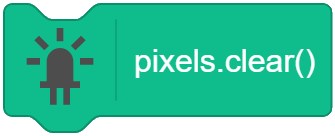
- Create color from separate Red, Green and Blue values
- Set the NeoPixel color

- Set the NeoPixel color using separate Red, Green and Blue values
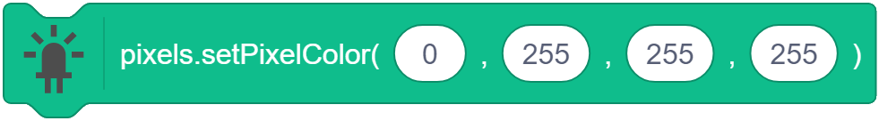
- Show the colors on NeoPixels from buffer
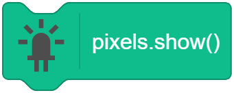
- Initialize Servo

- Attach the servo to the microcontroller pin

- Set the servo horn to a particular angle
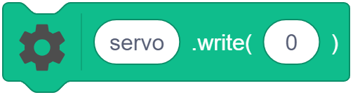
- Initialize motor
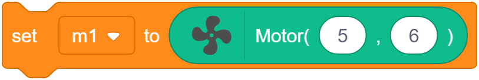
- Move the motor in clockwise direction
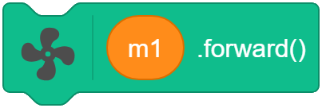
- Move the motor in anti-clockwise direction
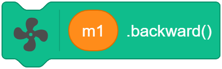
- Stop the motor
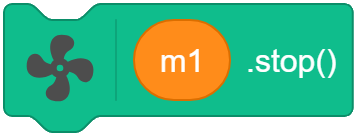
- Set the motor speed, to be used by the next motor command
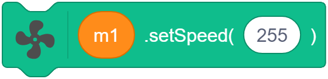
- Initialize Robot
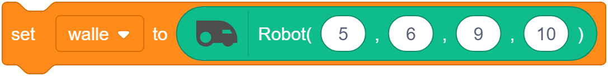
- Move the robot forward
- Move the robot backwards
- Turn the robot left
- Turn the robot right
- Stop the robot
- Set the robot speed, to be used by the next robot command
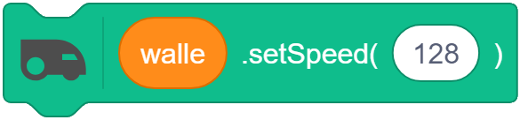
Arduino functions like delay, etc. will not be supported as it will cause the firmware to be blocked.
Also the wait Scratch blocks offers the same functionality. Similarly, functions like map, etc.
are executed in the Scratch runtime itself and does not require a physical hardware to run.